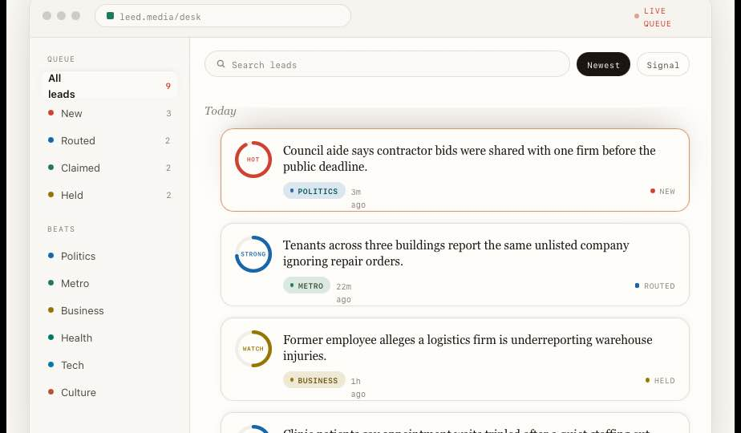

Source preferences stay visible
The design describes contact preferences and sensitivity flags alongside each lead. No source-contact request is processed here.
Leed is designed to turn audience submissions into concise story briefs and help editors route leads by beat and geography, with source contact preferences kept in view.
Design concept only. No live tips, newsroom accounts, or routing connections.

A concept for bringing source context, editorial judgement, and newsroom routing into one place.
Collect a submission with its evidence, context, and contact preferences. The intake flow is not connected in this preview.
The design handoff shows a concise brief with what is checkable, sensitive, and still under review. No AI service runs here.
The design describes matching against beat and location context. A reporter directory or routing service is not connected.
The LEED design handoff describes the following product direction. No production connection is active in this preview.
The design describes contact preferences and sensitivity flags alongside each lead. No source-contact request is processed here.
The concept compares public interest, verifiability, source context, and urgency while leaving editorial decisions with people.
Evidence, place, beat, and source-safety context are shown together in the design concept, not linked to live newsroom data.
Local concept preview. The pictured newsroom records are synthetic examples from a design mock. This page does not connect tip intake, newsroom accounts, reporter directories, AI triage, or source contact requests.
Opens the existing email inquiry link in your mail app. This preview does not send a message.